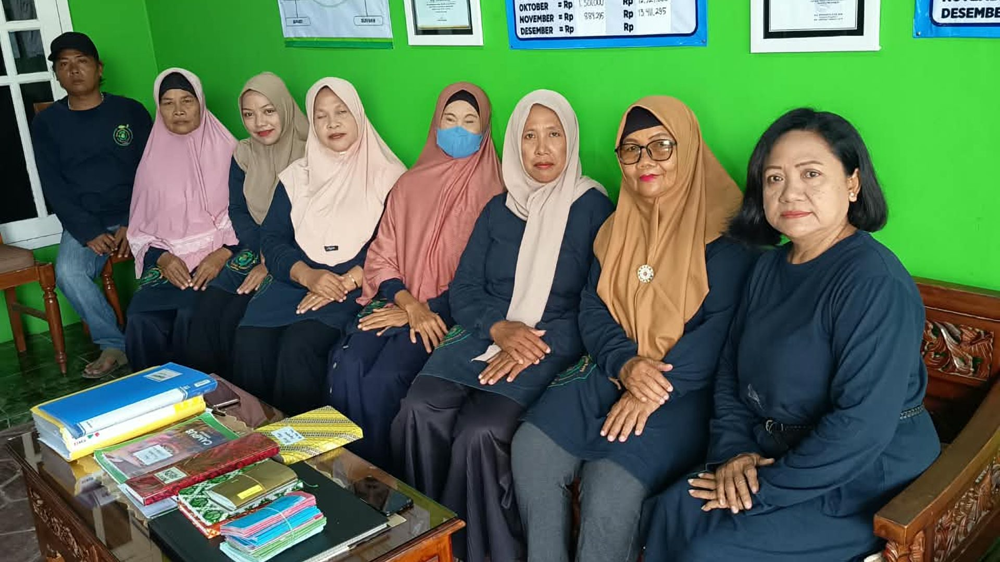

FOTO: penimbangan bulanan
Anorganik
Ditabung & dijual
Sampah anorganik nasabah ditimbang sebulan sekali, dicatat sebagai tabungan, lalu dijual ke mitra pengepul dan Bank Sampah Induk (BSI).
Sejak 7 Juni 2023 · Tegal Boto Kidul
Bank Sampah Unit Griya Resik mengajak warga memilah sampah dari rumah, menabungkannya, lalu bersama-sama menjaga lingkungan tetap bersih.
7 Juni 2023
Griya Resik resmi berdiri
80 nasabah
per November 2026, berawal dari 12 orang pada Juni 2023
1× sebulan
penimbangan rutin nasabah
2 jalur
organik jadi kompos & POC, anorganik ditabung & didaur ulang
Tentang kami
Bank Sampah Griya Resik berdiri pada 7 Juni 2023 di Lingkungan Tegal Boto Kidul, Kelurahan Sumbersari, Jember. Lokasinya berdekatan dengan Sungai Bedadung, dan setiap kali banjir datang, banyak sampah rumah tangga yang ikut hanyut di sepanjang bantaran.
Dari situ lahir dua tekad: lingkungan yang lebih bersih, dan sampah yang punya nilai ekonomi sehingga bisa menambah pendapatan warga.
Pengurus kami adalah ibu-ibu rumah tangga, orang-orang yang setiap hari paling dekat dengan urusan sampah dapur. Dimulai dengan 12 nasabah pada Juni 2023, lima bulan kemudian jumlahnya sudah mencapai 56 orang, dan kini (November 2026) sudah 80 orang.

Tempat penimbangan
Jl. Sumatra Gg. 6 No. 10A, RT 03 / RW 033, Tegal Boto Kidul, Kel. Sumbersari, Kec. Sumbersari, Kab. Jember
Visi
Mewujudkan keadilan dan kesejahteraan sosial anggota BSU Griya Resik secara mandiri, melalui pengelolaan sampah yang berkelanjutan, berorientasi ekonomi, dan berwawasan lingkungan.
Misi
Apa yang kami kerjakan
Anorganik
Sampah anorganik nasabah ditimbang sebulan sekali, dicatat sebagai tabungan, lalu dijual ke mitra pengepul dan Bank Sampah Induk (BSI).
Daur ulang
Sebagian sampah anorganik diolah ibu-ibu pengurus menjadi kerajinan tangan yang punya nilai jual.
Organik
Sampah dapur diolah menjadi kompos, eco-enzyme, dan pupuk organik cair (POC) Jakaba.
Belajar bersama
Anggota diajak ikut sosialisasi dan pelatihan pengelolaan sampah. Ke depan: budidaya maggot dan ekonomi pekarangan rumah.
Mudah, 4 langkah
01
Hubungi pengurus lewat WhatsApp atau datang langsung saat hari penimbangan.
02
Pisahkan sampah anorganik (plastik, kertas, kardus, logam) dari sampah organik. Usahakan bersih dan kering.
03
Bawa ke tempat penimbangan di Jl. Sumatra Gg. 6/10A, Tegal Boto Kidul, sebulan sekali.
04
Berat dan nilainya dicatat sebagai tabungan. Ketentuan pencairan: [KETENTUAN PENCAIRAN].
Daftar harga
Mengacu pada daftar harga Bank Sampah Induk Abang Recycle, periode Desember 2025. Harga per kilo kecuali yang bertanda /biji.
Harga dapat berubah sewaktu-waktu dalam situasi / kondisi tertentu.
Kode plastik 1 · umumnya botol minuman
| PET campur | Rp 2.500/kg |
| PET bening | Rp 4.000/kg |
| PET biru muda | Rp 3.000/kg |
| PET warna | Rp 2.500/kg |
| PET keras | Rp 1.000/kg |
| Galon Le Minerale | Rp 1.000/biji |
Kode plastik 5
| Ale-ale / sablonBekas es teh, ada sablon di pinggir | Rp 1.800/kg |
| Gelas kotorContoh: Alqodiri, Aqua gelas, dll. | Rp 1.800/kg |
| Gelas bersihBersih, tidak ada sablon | Rp 4.000/kg |
Kode plastik 5 · bak, timba, bekas Tupperware, plastik tanpa tutup
| Campur | Rp 2.000/kg |
| Pilah warna | Rp 2.400/kg |
| Warna hitam | Rp 1.500/kg |
Kode plastik 2 · bekas sampo, deterjen, botol pembersih
| Campur | Rp 2.500/kg |
| Pilah warna | Rp 3.000/kg |
Kode plastik 4 · kresek bekas wadah kemasan
| Sablon | Rp 600/kg |
| Warna | Rp 600/kg |
| Bening | Rp 1.000/kg |
Mainan anak, mika, dll.
| Plastik keras | Rp 1.000/kg |
| Kardus | Rp 1.500/kg |
| Buku | Rp 1.200/kg |
| HVSPutih, tanpa sampul/map | Rp 1.700/kg |
| Duplex | Rp 600/kg |
| Koran / buram | Rp 1.200/kg |
| Sak semen | Rp 3.200/kg |
| Besi / galvalum | Rp 3.500/kg |
| Seng / kawat / paku | Rp 1.000/kg |
| Kaleng | Rp 1.300/kg |
| Aluminium | Rp 11.000/kg |
| Kuningan | Rp 45.000/kg |
| Tembaga | Rp 80.000/kg |
| Aki | Rp 12.000/biji |
| TV LED / monitorTergantung ukuran | Rp 5.000–30.000/biji |
| TV tabungTergantung ukuran | Rp 10.000–20.000/biji |
| Mesin cuci | Rp 70.000/biji |
| Kulkas / freezer | Rp 75.000/biji |
| Laptop / CPU | Rp 30.000/biji |
| Printer | Rp 10.000/biji |
| AC | Rp 200.000/biji |
| HP mati total / kamera | Rp 5.000/biji |
| Proyektor | Rp 20.000/biji |
| VCD / kipas / setrika | Rp 3.500/kg |
| Blender | Rp 600/kg |
| Kaca / beling | Rp 200/kg |
| Botol kecap | Rp 400/kg |
| Minyak jelantah | Rp 5.000/kg |
| Kain perca | Rp 1.000/kg |
Harga dapat berubah sewaktu-waktu dalam situasi / kondisi tertentu.
Jember yang lebih bersih dimulai dari satu rumah.
Rumahmu bisa jadi yang berikutnya.
7 Juni 2023
November 2023
[TANGGAL]
Daftar jadi nasabah, ikut jadi relawan, atau dukung kami sebagai mitra.
Penimbangan
Sebulan sekali · [TANGGAL & JAM]
Lokasi
Jl. Sumatra Gg. 6 No. 10A, RT 03/RW 033, Tegal Boto Kidul, Sumbersari, Jember
(rumah Ibu Ely Yuliastutik)
Kontak
WhatsApp: 0823-3311-9143
Instagram: @bsugriyaresik.jember